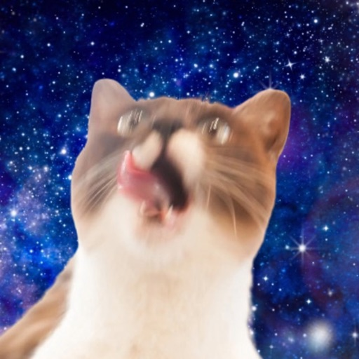
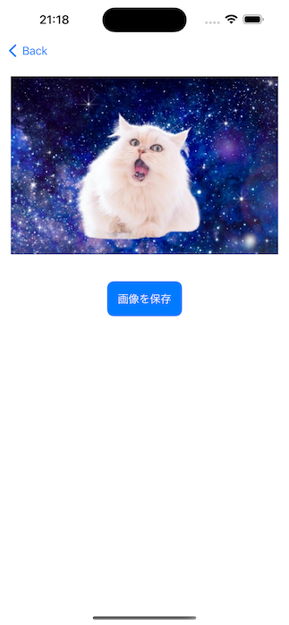

猫を選ぶ
用意された猫をランダムに選ぶか、自分の画像を読み込みます。

宇宙猫コラ画像ジェネレーターその猫を、宇宙へ。
宇宙猫コラ画像ジェネレーターは、猫の画像と宇宙の背景を組み合わせ、コラ画像を作って保存できるiPhoneアプリです。用意された素材や自分の画像で楽しめます。
App Storeで見るiPhone / iOS 16.0以降 · 価格・対応端末はApp Storeをご確認ください

HOW TO USE
用意された猫をランダムに選ぶか、自分の画像を読み込みます。
宇宙の背景を選び、猫と合成します。仕上がりを見ながら組み合わせを楽しめます。
完成したコラ画像を写真に保存します。共有するときは、使用した画像の権利や素材の利用条件を確認してください。
FEATURES
画像を読み込んで、猫を宇宙の背景と組み合わせられます。
用意された猫と宇宙の素材で、写真を準備せずに試せます。
合成後に「画像を保存」から、気に入った1枚を残せます。
FAQ
はい。「画像を読み込み」から選べます。写真の状態によって背景の切り抜き結果は変わります。
用意された猫や宇宙の素材をランダムに選んで作れます。
ページ下部の「使用している素材」から確認できます。共有・公開する際は、素材ごとの利用条件に従ってください。
データの取り扱いはプライバシーポリシーをご確認ください。
1.3では、使いやすさの改善に役立てるための利用状況分析を追加しました。
2026年10月18日確認：バージョン 1.3。最新の配信状況はApp Storeをご確認ください。